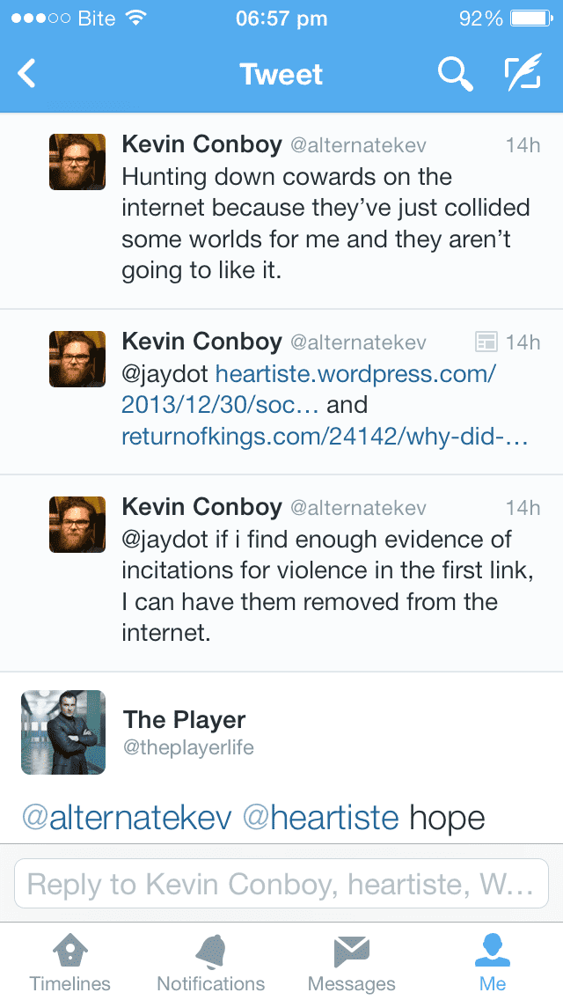

Frost is the author of the blogs Thumotic and Freedom Twenty-Five. He is the author of The Freedom Twenty-Five Lifestyle Guide, The 2012 End Of The World Tour, and the novel A Generation Of Men.


I’ve been using WordPress for several years now. I love WordPress as a technology, but more importantly, I love what WordPress stands for: the free exchange of information between individuals, and the triumph of raw ideas over the governments and corporations that would seek to control them.
Sadly though, it looks like WordPress might not be as trustworthy as we had hoped. On Twitter earlier today, a man named Kevin Conboy (pictured below) appears to have threatened to have a blog removed from the internet because he found the content offensive:
@alternatekev Hunting down cowards on the internet because they’ve just collided some worlds for me and they aren’t going to like it.
@jaydot http://heartiste.wordpress.com/2013/12/30/sociopathy-is-increasing-in-america/ and http://www.returnofkings.com/24142/why-did-karl-halverson-pierson-attack-his-school-and-kill-a-pretty-girl
@jaydot if i find enough evidence of incitations for violence in the first link, I can have them removed from the internet.

Since then, he has gone on the defensive and protected his Twitter account. But the tweets have been preserved by the author of the blog that Conboy was offended by, who issued a statement today:
“We hear so much about liberal tolerance and open-mindedness, yet in practice it’s hard, and getting harder, to find actual examples of anything but the opposite behaviour
…
WordPress is a great platform, and a model for other hosting companies. They have provided a free service that has fostered a true renaissance of ideas …. One wonders if WordPress.com is aware that one of their employees is a gung-ho advocate of disappearing wordpress-hosted blogs for writing things that offend his exquisite sensibilities? I’m not a fly on the wall at WordPress headquarters, but I can’t imagine an employee so transparently antagonistic to the first principle of a company to expand the means with which free thinking men can communicate to the masses would be the sort of saboteur with whom the company wishes to associate.”
The other article was one published here at Return Of Kings, which does not run on WordPress.com.
Enemy of free speech @alternatekev threatens to delete blogs he disagrees with. Disappointed in @wordpressdotcom for employing such thugs
— Viva La Manosphere (@VManosphere) January 3, 2014
I wonder if @wordpress knows about their employee @alternatekev threatening to have blogs he doesn’t like taken down?
— Frost (@FreedomTwenty5) January 2, 2014
Really disappointed in @wordpressdotcom for letting @alternatekev run unchecked threatening to delete the blogs of people he dislikes.
— Heart Machine (@Clash1e) January 3, 2014
So who is Kevin Conboy? According to his LinkedIn profile, he has been a key member of the WordPress team for the past four years, with the following experience:
“Complete user interface and interaction design ownership for Polldaddy.com. I’ve got designs and interfaces running on WordPress.com, Akismet.com and more. I managed the incredible team that designed, built and launched restaurants.wordpress.com and the free Confit WordPress theme. Designed free Ideation & Intent WordPress theme. Coded HTML 5, CSS 3, PHP 5.3, jQuery and WordPress plugins and themes for Polldaddy support sites, various web apps, Polldaddy mobile apps and blogs. Objective-C/Cocoa coding and UI implementation for iOS on iPhone and iPad, initial version accomplished by a team of five in under two weeks. Implemented responsive and hi-res CSS updates across the Automattic web presences, Polldaddy in particular. I have spoken at and organized multiple regional WordCamps, including Denver and Boulder. I have worked at Happiness Bars helping users with WordPress problems at WordCamps, SXSW and more. I provide ongoing organizing and leadership of local WordPress meetups and Happiness Hours. I was the lead organizer and designer for WordCamp Denver 2012, and most likely both for 2013. I have written product announcement blog posts immediately broadcast to over 10 million email subscribers, garnering 600+ WordPress.com likes and 500+ retweets. I’ve designed UI and done hi-res graphics production for one of the most popular social sharing plugins available for WordPress in the world, as available in Jetpack. Made complete UI overhaul to Polldaddy WordPress plugin. And so. Much. More.”
In other words, Conboy is an influential person over at Team WordPress. And while I’m sure he’s a talented developer, the real question is: do WordPress users feel comfortable hosting their blogs with a company that employs someone who makes public threats against authors who offend him?
The ongoing Twitter backlash against Conboy suggests that many WordPress users feel the answer is ‘No.’ Some have even suggested that if WordPress continues to employ alleged “fascists” such as Conboy, they will be looking into other content management systems.At a time when internet users are growing increasingly concerned with privacy, surveillance, censorship, and the ‘chilling effect’ on free speech that is the necessary result, it is disappointing to see a company which once stood for free expression and the democratization of information – Automattic (the company behind WordPress) – doesn’t seem to have a problem with employing anti-free speech potential fascists such as Kevin Conboy.
Read Next: How To Defeat Media Liberals